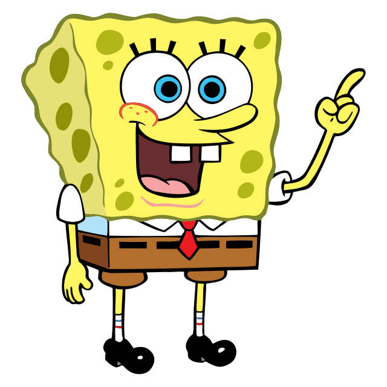
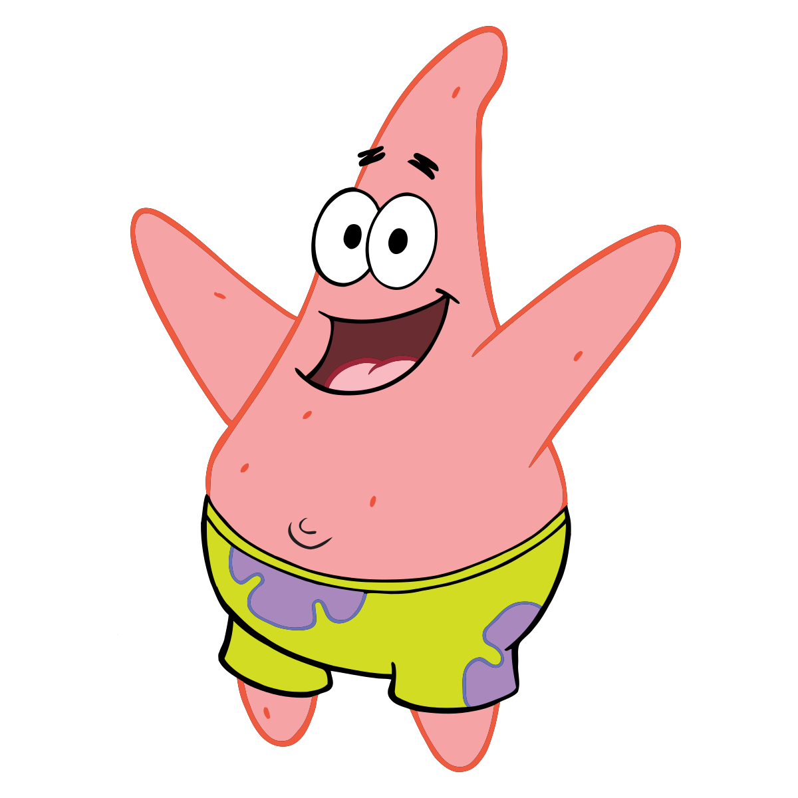
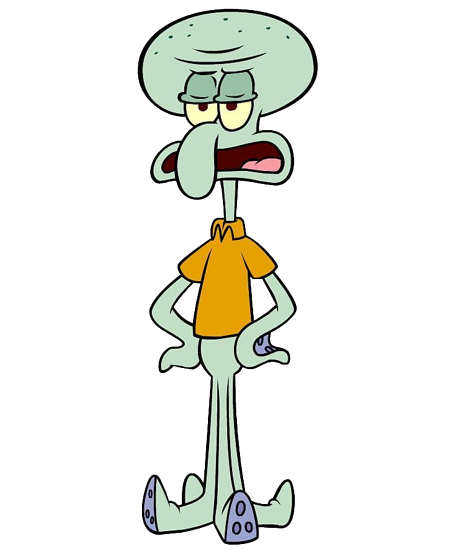

| 1 |
Spongebob |

|
SpongeBob SquarePants merupakan karakter protagonis dari seri televisi animasi asal Amerika yang berjudul sesuai namanya, SpongeBob SquarePants. Ia memiliki watak yang optimis dan bersifat kekanak-kanakan, dan dipengaruhi oleh tokoh komedi lainnya seperti Stan Laurel dan Pee-Wee Herman. Ia diisihsuara oleh seorang aktor dan komedian bernama Tom Kenny. |
| 2 |
Patrick |

|
Patrick Star adalah karakter seri animasi SpongeBob SquarePants. Dia adalah bintang laut yang tinggal di batu. Dia tinggal di Bikini Bottom, yang bertetangga dengan SpongeBob, teman baiknya, dan Squidward, yang tidak menyukainya. Dia adalah makhluk terbodoh di Bikini Bottom karena sering melakukan hal-hal yang bodoh. Bersama dengan SpongeBob, dia setiap hari mengganggu Squidward (meskipun mereka tidak sadar yang dilakukannya itu mengganggu). |
| 3 |
Squidward |

|
Squidward Quincy Tentacles adalah karakter dalam animasi SpongeBob SquarePants. Dia adalah seekor gurita yang tinggal di rumah berbentuk moai. Bertetangga dengan SpongeBob dan Patrick Star, tetapi ia tidak suka memiliki tetangga seperti mereka karena sering mengganggunya dalam hari santainya. Ia juga bekerja di restoran Krusty Krab sebagai kasir bersama dengan SpongeBob. Biasanya ia tidak bekerja dengan sangat serius, dan sifatnya kebalikan dari SpongeBob. |